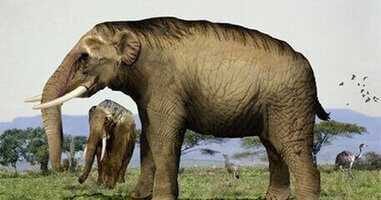
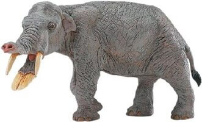
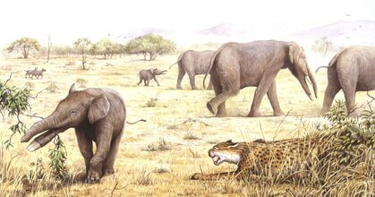
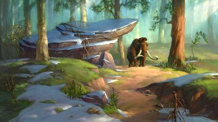
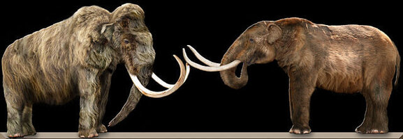

Distribution of the Wooly Mammoth at its peak population.
Mammoths and Mastodons
During the era following the extinction of the dinosaurs, the Cenozoic era, many elephants roamed the Nebraska landscape. Four-tuskers, Stegomastodons, Mastodons, and Mammoths were the most common. The ancestors of these elephants came over to North America from North Africa and Central Asia about 20 million years ago. The earliest elephants found in Nebraska were the Gomphotheres
 The Amebelodon or "shovel-tusked" gomphothere first appeared in the Great Plains region of North America roughly nine million years ago, then became extinct here around six million years ago when severe drought set in.
Stegomastodon, also a gomphothere, was present in Nebraska from four million to 1.3 million years ago. Stegomastdon was short and muscular, more bulldog than a leggy elephant. During the lives of the Ameldon and Stegomastodon, Nebraska was a warm, grassy savanna. Trees and shrubs dotted the landscape and resembled modern-day Africa.
Mastodons were present in Nebraska from 2 million until about 10,000 years ago. Rather than feeding on grasses, mastodons browsed on shrubs, leaves, and pine tree branches. The climate in Nebraska was much cooler and drier because of the ice age in the Northern Hemisphere, which started around 1.8 million years ago.
Mammoths are the most commonly found elephant fossil in Nebraska. Mammoths were present in Nebraska from two million until about ten thousand years ago. Woolly mammoths were grazers, eating a variety of grasses, leaves, berries, nuts, and twigs. Scientists think they were still here when the early man came into the Nebraska region, twelve thousand years ago.
Mammoths
Although the mammoth was an elephant, it was much larger than the modern elephant. The three Mammoth species found in Nebraska are the Columbian elephant, Imperial elephant and the shaggy Wooly Mammoth which is seldom found south of Nebraska.
Woolly Mammoths evolved adaptations for Arctic life like small ears and tails to minimize heat loss, a thick layer of subcutaneous fat, long thick fur, and a large fat hump behind the neck that may have been a heat source and fat reservoir during winter.
Mastodons
Mastodons were very similar in appearance to elephants and less like Mammoths. Their build was similar to current Asian elephants. Mastodons were found as far south as Florida and as far east as the New England states.
Compared to Mammoths, Mastodons had a longer, more muscler body with a flater back and shorter legs. They were not shaggy like a Mammoth. Mastodons had a low and long skull with long, slightly curved tusks which were straighter than the very curved Mammoth tusks.
Where Did They Go
.jpg)
There is still an active debate on the extinction of elephants in North America. There are three sides to the discussion. Some say they were hunted to extinction. Another side claims their extinction was the result of climate change which killed the once abundant food source. The third camp suggests that it was a combination of the two. The confusion comes from the arrival of humans at the same time that climate change was changing the landscape. Grasslands were changed to forests and other areas became hot and arid, destroying the grazing grounds of the great herbivores.